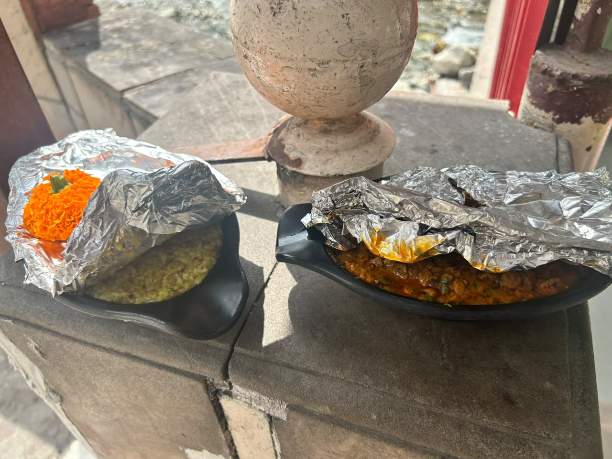

A Barefoot Promise at Kainchi Dham कैंची धाम में एक नंगे पैर का संकल्प

Kainchi Dham, September 2026 कैंची धाम, सितंबर 2026
It began not with a plan, but with an unanswerable question.
On September 18, 2026, at 4 AM, Shravan departed Hyderabad barefoot and alone. He carried food his wife Swetta had woken at 2 AM to cook, without knowing its purpose. Ghee Pongal and Soya curry, no onion, no garlic, packed with the care only a wife trusting her husband's instinct can offer.
A cab driver named Vimal, unprompted, suggested stopping at Bhumiyandhar temple before Kainchi Dham. The food was offered to Baba, then distributed as bhog to 11 devotees outside. That evening, returning for darshan, the security guard remembered him and remarked on the food's exceptional taste.
Later that same evening, Tripathi Ji, known as Dada, heard the story. Having not eaten, he felt it was no coincidence, Baba wanted this dish cooked again. He called Kundan, owner of Hotel Anupam, explaining a devotee needed a specific dish prepared. Kundan was puzzled; the temple cooked its own food, so why him? He sat with his confusion for a moment, then a feeling struck him: this was Baba's doing. He agreed.
That Sunday evening, Swetta called Prakash, the chef at Hotel Anupam, from Hyderabad. She shared the recipe over the phone, explaining every step and emphasising the pure requirements for this kitchen: no onion, no garlic, nothing that would dilute the offering.
On the morning of September 21, during darshan, a panditji mentioned bhog is offered to Baba at noon. The call to Prakash was immediate: could the food be ready by 11:45? Yes, he confirmed, and it was.
Those bowls went back to Hotel Anupam, where their contents were mixed into larger vessels. With Rohit and Vijay standing alongside unasked, more than 75 devotees were fed. Prakash refused payment, Kundan requested only ₹500 for gas. Every ingredient had come from Milan Stores in Garam Pani.
None of it was planned: not Dada, not Kundan's confusion that transformed into faith, not the noon timing, not Rajan Panditji standing exactly where he needed to be on precisely that day, not Prakash delivering on time, not the marigolds returning in the bowls.
To this day, there is no explanation for why the food needed to be cooked at home and carried from Hyderabad in the first place, why Swetta woke at 2 AM and said yes without a second thought, or why every door opened exactly when it needed to.
राम SITA राम was born from that moment, not as a business, but as a recognition that something larger had already decided what it would become.
यह किसी योजना से नहीं, बल्कि एक ऐसे सवाल से शुरू हुआ जिसका कोई जवाब नहीं था।
18 सितंबर 2026 को, सुबह 4 बजे, Shravan नंगे पैर और अकेले हैदराबाद से निकले। साथ था वह खाना जो उनकी पत्नी Swetta ने रात 2 बजे उठकर बनाया था, बिना यह जाने कि इसका उद्देश्य क्या है। घी पोंगल और सोया करी, बिना प्याज, बिना लहसुन, उस देखभाल के साथ जो केवल वह पत्नी दे सकती है जो अपने पति की अंतरात्मा पर भरोसा करती हो।
Vimal नाम के कैब ड्राइवर ने, बिना पूछे, पहले भूमियांधार मंदिर रुकने का सुझाव दिया, फिर कैंची धाम। भोजन बाबा को अर्पित किया गया, फिर बाहर 11 भक्तों में भोग के रूप में बाँटा गया। उस शाम दर्शन के लिए लौटते समय, सुरक्षा गार्ड ने उन्हें पहचाना और खाने की असाधारण स्वाद की तारीफ की।
उसी शाम, त्रिपाठी जी, जिन्हें दादा कहते हैं, ने यह कहानी सुनी। उन्होंने खाना नहीं खाया था और उन्हें लगा यह संयोग नहीं था, बाबा चाहते थे कि यह व्यंजन फिर बने। उन्होंने Hotel Anupam के मालिक Kundan को फोन किया और बताया कि एक भक्त के लिए एक विशेष व्यंजन तैयार करना है। Kundan हैरान थे, मंदिर अपना खाना खुद बनाता है, तो उनसे क्यों? वह कुछ देर उस उलझन में बैठे रहे, फिर एक एहसास हुआ: यह बाबा का काम है। उन्होंने हाँ कह दिया।
उस रविवार की शाम, Swetta ने हैदराबाद से Hotel Anupam के शेफ Prakash को फोन किया। उन्होंने फोन पर पूरी रेसिपी बताई, हर कदम समझाया और इस रसोई की शुद्धता की आवश्यकताओं पर जोर दिया: बिना प्याज, बिना लहसुन, कुछ भी नहीं जो भोग को कमज़ोर करे।
21 सितंबर की सुबह, दर्शन के दौरान, एक पंडितजी ने बताया कि दोपहर को बाबा को भोग लगाया जाता है। Prakash को तुरंत फोन गया: क्या 11:45 तक खाना तैयार हो सकता है? हाँ, उन्होंने पुष्टि की, और हो गया।
वे कटोरे Hotel Anupam वापस गए, जहाँ उनकी सामग्री बड़े बर्तनों में मिला दी गई। Rohit और Vijay बिना कहे साथ खड़े हो गए, और 75 से अधिक भक्तों को भोजन मिला। Prakash ने पैसे लेने से मना किया, Kundan ने केवल गैस के लिए ₹500 माँगे। हर सामग्री गरम पानी में Milan Stores से आई थी।
कुछ भी योजनाबद्ध नहीं था: न दादा, न Kundan की वह उलझन जो आस्था में बदल गई, न दोपहर का वह समय, न Rajan पंडितजी का ठीक उस दिन ठीक उस जगह खड़े होना, न Prakash का समय पर खाना देना, न गेंदे के फूलों का कटोरों में वापस आना।
आज तक कोई स्पष्टीकरण नहीं है कि खाना घर पर बनाकर हैदराबाद से क्यों लाना पड़ा, Swetta रात 2 बजे क्यों उठीं और बिना दूसरा सोचे हाँ क्यों कहा, या हर दरवाज़ा ठीक उसी वक्त क्यों खुला जब खुलना था।
राम SITA राम उसी पल से जन्मा, एक व्यापार के रूप में नहीं, बल्कि इस पहचान के रूप में कि किसी बड़ी शक्ति ने पहले से तय कर लिया था कि यह क्या बनेगा।